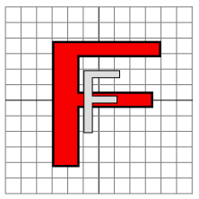

Section 1: 2D Transforms in Java
In this section, we look at the geometric transforms that can be applied to a Graphics2D drawing context in Java. Recall that Graphics2D is a subclass of Graphics that adds certain advanced capabilities. The graphics context that is passed to a paintComponent method is actually of type Graphics2D and can be converted to that type to obtain access to advanced capabilities such as geometric transforms. Typically, this is done as follows:
protected void paintComponent(Graphics g) {
super.paintComponent(g);
Graphics2D g2 = (Graphics2D)g.create();
// ... draw using g2 ...
}
Here, we consider only the geometric transform methods that are applied in Graphics2D. We will look at some of its other capabilities in the next section.
Geometric Transforms and Graphics2D
Being able to draw geometric shapes is important, but it is only part of the story. Just as important are geometric transforms that allow you to modify the shapes that you draw, such as by moving them, changing their size, or rotating them. Some of this, you can do by hand, by doing your own calculations. For example, if you want to move a shape three units to the right, you can simply add 3 to each of the horizontal coordinates that are used to draw the shape. This would quickly become tedious, however, so it's nice that we can get the computer to do it for us simply by specifying an appropriate geometric transform. Furthermore, there are things that you simply can't do in Java without transforms. For example, when you draw a string of text without a transform, the baseline of the text can only be horizontal. There is no way to draw the string tilted at an angle. Similarly, the only way to draw a tilted image is by applying a transform. Here is an example of a string and an image drawn by Java in their normal orientation and with a counterclockwise 30-degree rotation:

Every Graphics2D graphics context has a current transform that is applied to all drawing that is done in that context. You can change the transform, and the new value will apply to all subsequent drawing operations; it will not affect things that have already been drawn in the graphics context. Generally, in a newly created Graphics2D, the current transform is the identity transform, which has no effect at all on drawing. (There are some exceptions to this. For example, when drawing to a printer, the pixels are very small. If the same coordinates were used when drawing to the printer as are used on the screen, the resulting picture would be tiny. So, when drawing to a printer, Java provides a default transform that magnifies the picture to make it look about the same size as it does on the screen.)
The transform in a Graphics2D can be any affine transform. An affine transform has the property that when it is applied to any set of parallel lines, the result is also a set of parallel lines (or, possibly, a single line or even a single point). An affine transform in two dimensions can be specified by six numbers a, b, c, d, e, and f, which have the property that when the transform is applied to a point (x,y), the resulting point (x1,y1) is given by the formulas:
x1 = a*x + b*y + e y1 = c*x + d*y + f
Affine transforms have the important property that if you apply one affine transform and then follow it with a second affine transform, the result is another affine transform. For example, moving each point three units to the right is an affine transform, and so is rotating each point by 30 degrees about the origin (0,0). Therefore the combined transform that first moves a point to the right and then rotates it is also an affine transform. Combining two affine transformations in this way is called multiplying them (although it is not multiplication in the usual sense). Mathematicians often use the term composing rather than multiplying.
It's possible to build up any two-dimensional affine transformation from a few basic kinds of simple transforms: translation, rotation, and scaling. It's good to have an intuitive understanding of these basic transforms and how they can be used, so we will go through them in some detail. The effect of a transform depends on what coordinate system you are using for drawing. For this discussion, we assume that the origin, (0,0), is at the center of the picture, with the positive direction of the x-axis pointing to the right and the positive direction of the y-axis pointing up. Note that this orientation for the y-axis is the opposite of the usual orientation in Java; it is, however, the more common orientation in mathematics.
In Java, an affine transformation is represented by an object of class AffineTransform, defined in package java.awt.geom, and every Graphics2D has an associated object of this type. You can get and set the current transform in a Graphics2D g by calling g.getTransform() and g.setTransform(transform). This allows you to save a copy of the current transform so that you can restore it later, which will be important when we cover hierarchical graphics in Section 3.
Translation
A translation simply moves each point by a certain amount horizontally and a certain amount vertically. The formula for a translation is
x1 = x + e y1 = y + f
where the point (x,y) is moved e units horizontally and f units vertically. (Thus for a translation, a = d = 1, and b = c = 0.) If you wanted to apply this translation to a Graphics2D g, you could simply say g.translate(e,f). This would mean that for all subsequent drawing operations, e would be added to the x-coordinate and f would be added to the y-coordinate. Let's look at an example. Suppose that you are going to draw an "F" centered at (0,0). If you say g.translate(4,2) before drawing the "F", then every point of the "F" will be moved over 4 units and up 2 units, and the "F" that appears on the screen will actually be centered at (4,2). Here is a picture:
The light gray "F" in this picture shows what would be drawn without the translation; the dark red "F" shows the same "F" drawn after applying a translation by (4,2). The arrow shows that the upper left corner of the "F" has been moved over 4 units and up 2 units. Every point in the "F" is subjected to the same displacement.
Remember that when you say g.translate(e,f), the translation applies to all the drawing that you do after that, not just to the next shape that you draw. If you apply another transformation to the same g, the second transform will not replace the translation. It will be multiplied by the translation, so that subsequent drawing will be affected by the combined transformation. This is an important point, and there will be a lot more to say about it later.
Rotation
A rotation rotates each point about the origin, (0,0). Every point is rotated through the same angle, called the angle of rotation. For this purpose, angles in Java are measured in radians, not degrees. For example, the measure of a right angle is Math.PI/2, not 90. Positive angles move the positive x-axis in the direction of the positive y-axis. (This is counterclockwise in the coordinate system that we are using here, but it is clockwise in the usual pixel coordinates, where the y-axis points down rather than up.) Although it is not obvious, when rotation through an angle of r radians about the origin is applied to the point (x,y), then the resulting point (x1,y1) is given by
x1 = cos(r) * x - sin(r) * y y1 = sin(r) * x + cos(r) * y
That is, in the general formula for an affine transform, e = f = 0, a = d = cos(r), b = −sin(r), and c = sin(r). Here is a picture that illustrates a rotation about the origin by the angle −135 degrees:
Again, the light gray "F" is the original shape, and the dark red "F" is the shape that results if you apply the rotation. The arrow shows how the upper left corner of the original "F" has been moved.
In a Graphics2D g, you can apply a rotation through an angle or r radians by saying g.rotate(r) before drawing the shapes that are to be rotated.
Combining Transforms
We are now in a position to see what can happen when you combine two transformations. Suppose that you say
g.translate(4,0); g.rotate(Math.PI/2);
before drawing some shape. The translation applies to all subsequent drawing, and the thing that you draw after the translation is a rotated shape. That is, the translation applies to a shape which has already been rotated. An example is shown on the left in the illustration below, where the light gray "F" is the original shape. The dark red "F" shows the result of applying the two transforms. The "F" has first been rotated through a 90 degree angle (Math.PI/2 radians), and then moved 4 units to the right.
Transforms are applied to shapes in the reverse of the order in which they are given in the code (because the first transform in the code is applied to a shape that has already been affected by the second transform). And note that the order in which the transforms are applied is important. If we reverse the order in which the two transforms are applied in this example, by saying
g.rotate(Math.PI/2); g.translate(4,0);
then the result is as shown on the right in the above illustration. In that picture, the original "F" is first moved 4 units to the right and the resulting shape is then rotated through an angle of 90 degrees about the origin to give the shape that actually appears on the screen.
For an example of applying several transformations, suppose that we want to rotate a shape through an angle r about a point (p,q) instead of about the point (0,0). We can do this by first moving the point (p,q) to the origin with g.translate(−p,−q). Then we can do a standard rotation about the origin by calling g.rotate(r). Finally, we can move the origin back to the point (p,q) using g.translate(p,q). Keeping in mind that we have to apply the transformations in the reverse order, we can say
g.translate(p,q); g.rotate(r); g.translate(-p,-q);
before drawing the shape. In fact, though, you can do the same thing in Java with one command: g.rotate(r,p,q) will apply a rotation of r radians about the point (p,q) to any shapes that follow this command.
Scaling
A scaling transform can be used to make objects bigger or smaller. Mathematically, a scaling transform simply multiplies each x-coordinate by a given amount and each y-coordinate by a given amount. That is, if a point (x,y) is scaled by a factor of a in the x direction and by a factor of d in the y direction, then the resulting point (x1,y1) is given by
x1 = a * x y1 = d * y
If you apply this transform to a shape that is centered at the origin, it will stretch the shape by a factor of a horizontally and d vertically. Here is an example, in which the original light gray "F" is scaled by a factor of 3 horizontally and 2 vertically to give the final dark red "F":

The common case where the horizontal and vertical scaling factors are the same is called uniform scaling. Uniform scaling stretches or shrinks a shape without distorting it.
When scaling is applied to a shape that is not centered at (0,0), then in addition to being stretched or shrunk, the shape will be moved away from 0 or towards 0. In fact, the true description of a scaling operation is that it pushes every point away from (0,0) or pulls every point towards (0,0). (If you want to scale about a point other than (0,0), you can use a sequence of three transforms, similar to what was done in the case of rotation. Java provides no shorthand command for this operation.)
To scale by (a,d) in Graphics2D g, you can call g.scale(a,d). As usual, the transform applies to all x and y coordinates in subsequent drawing operations. Note that negative scaling factors are allowed and will result in reflecting the shape as well as possibly stretching or shrinking it. For example, g.scale(1,-1) will reflect the subsequent drawing vertically, through the x-axis.
Shear
We will look at one more type of basic transform, a shearing transform. Although shears can in fact be built up out of rotations and scalings if necessary, it is not really obvious how to do so. A shear will "tilt" objects. A horizontal shear will tilt things towards the left (for negative shear) or right (for positive shear). A vertical shear tilts them up or down. Here is an example of horizontal shear:
A horizontal shear does not move the x-axis. Every other horizontal line is moved to the left or to the right by an amount that is proportional to the y-value along that line. When a horizontal shear is applied to a point (x,y), the resulting point (x1,y1) is given by
x1 = x + b * y y1 = y
for some constant shearing factor b. Similarly, a vertical shear by a shearing factor c has equations
x1 = x y1 = c * x + y
In Java, the method for applying a shear to a Graphics2D g allows you to specify both a horizontal shear factor b and a vertical shear factor c: g.shear(b,c). For a pure horizontal shear, you can set c to zero; for a pure vertical shear, set b to zero.
Coordinate Transforms and Modeling Transforms
Conceptually, there are two kinds of transformation: modeling transforms and coordinate transforms. A modeling transform is applied to an object to set the size, orientation, or position of that object. This is the type of transform that had been described in this section. A coordinate transformation, on the other hand, modifies the coordinate system that is used for drawing. It might move the origin, (0,0), to a different point, or it might rotate the coordinate axes or change the unit of measure on the axes. Another way of saying this is that a coordinate transform determines the region of the xy-plane that is shown in the image. For example, for a 600-by-600 pixel panel in Java, the usual coordinate system shows the region that extends from 0 to 600 horizontally and vertically. If we apply a coordinate transform that moves the origin to (300,300), then the same panel will show the region that extends from −300 to 300 instead. The region of the plane that is shown in the panel is called the viewport. Note that moving the origin to the right and down is the same as sliding the viewport to the left and up.
Now, it turns out that coordinate transforms and modeling transforms are really just different ways of looking at the same thing. Suppose, for example, that we apply the transform g.translate(300,300) to a 600-by-600 panel and them draw some object. This is a modeling transform that moves the object 300 pixels horizontally and vertically. If the object is, say, a circle that is drawn with center at (0,0), it will actually appear in the display with its center at (300,300), that is, in the center of the panel. However, it would be just as valid to say the transform was a coordinate transform that moved the origin to the point (300,300) or that it slides the viewport 300 pixels to the left and 300 pixels up. In the new coordinate system, when a circle is drawn with center (0,0), it will appear in the center of the panel. Think of a world containing a circle centered at (0,0). As you slide the viewport to the left and up, the circle moves in the viewport down and to the right; it starts at the upper left corner of the viewport and ends up in the center. The picture is the same in the end, whether you think of the viewport moving (coordinate transform) or the circle moving (modeling transform).
Note that the effect of a given transform on the viewport is the opposit of its effect on the objects that are drawn. Moving the objects by (300,300) is the same as moving the viewport by (−300,−300). Similarly, rotating the objects clockwise about the origin is the same as rotating the viewport counterclockwise, and magnifying the objects is the same as shrinking the viewport. It is worthwhile to think about this and make sure that you understand it.
In practice, we tend to keep modeling and coordinate transforms separate. When creating an image, we first apply a coordinate transform to set up the viewport that we want to use. We then think of the coordinate system as fixed. Any further transforms are considered to be modeling transforms that affect the objects that we draw.
Let's see how to set up a coordinate system on a component such as a JPanel. In the standard coordinate system, the upper left corner is (0,0), and the component has a width and a height that give its size in pixels. The width and height can be obtained by calling the panel's getWidth() and getHeight() methods. Suppose that we would like to draw on the panel using a real-number coordinate system that extends from x1 on the left to x2 on the right and from y1 at the top to y2 at the bottom. A point (x,y) in these coordinates corresponds to pixel coordinates
( (x-x1)/(x2-x1) * width, (y-y1)/(y2-y1) * height )
To see this, note that (x-x1)/(x2-x1) is the distance of x1 from the left edge of the panel, given as fraction of the total width, and similarly for the height. If we rewrite this as
( (x-x1) * (width/(x2-x1)), (y-y1) * (height/(y2-y1)) )
we see that the change in coordinates can be accomplished by first translating by (-x1,-y1) and then scaling by (width/(x2-x1),height/(y2-y1)). Keeping in mind that transforms are applied to coordinates in the reverse of the order in which they are given in the code, we can implement this coordinate transform in the panel's paintComponent method as follows
protected void paintComponent(Graphics g) {
super.paintComponent(g);
Graphics2D g2 = (Graphics2D)g.create();
g2.scale( getWidth() / ( x2 - x1 ), getHeight() / ( y2 - y1) );
g2.translate( -x1, -y1 );
... // draw the content of the panel, using the new coordinate system
}
The scale and translate in this example set up the coordinate transformation and establish the viewport. Any further transforms can be thought of as modeling transforms that are used to modify shapes. However, remember that it's really just a nominal distinction.
The transforms used in this example will work even in the case where y1 is greater than y2. This allows you to introduce a coordinate system in which the minimal value of y is at the bottom rather than at the top.
A Note About Aspect Ratio
When applying a coordinate transform, you might want to consider the aspect ratio. The aspect ratio of a rectangular area is equal to the height of the area divided by the width. When a Java panel is used as a drawing area, it has its own aspect ratio, given by it physical size on the screen. This size is set by the program or possibly by the user if the program allows resizing of its windows. When you apply a coordinate rectangle, you lay out new coordinates on the panel, which maps some rectangular viewport in the xy-plane onto the panel. This viewport has its own aspect ratio, which can be different from the physical aspect ratio of the panel. Such a difference in aspect ratio will distort objects to which the coordinate transform is applied. For example. For example, a circle in the viewport will become a non-circular oval in the panel. The difference in aspect ratios causes a stretching in one direction. The stretching is not always a bad thing, but often you will want to avoid it. To do that, you want to make sure that the aspect ratio of the viewport matches the aspect ratio of the panel.
Suppose that you want to make sure that a certain rectangular viewport is visible in the panel. If the aspect ratios don't agree, you might want to adjust the viewport. However, you will still want to make sure that the entire rectangle that you want to view is included in the visible viewport. The solution is to expand the viewport in either the horizontal or in the vertical direction just enough to make the aspect ratios agree. This gives the smallest viewport that includes the desired rectangle, and it ensures that anything that you draw in that rectangle will be visible in the panel. Here is a method that you can use to apply a coordinate transformation to a panel, with the option of preserving the aspect ratio:
/**
* Applies a coordinate transform to a Graphics2D graphics context. The upper
* left corner of the viewport where the graphics context draws is assumed to
* be (0,0). The coordinate transform will make a requested rectangle visible
* in the drawing area. The requested limits might be adjusted to preserve the
* aspect ratio. (This method sets the global variable pixelSize to be equal to
* the size of one pixel in the transformed coordinate system.)
* @param g2 The drawing context whose transform will be set.
* @param xleft requested x-value at left of drawing area.
* @param xright requested x-value at right of drawing area.
* @param ytop requested y-value at top of drawing area.
* @param ybottom requested y-value at bottom of drawing area; can be less than
* ytop, which will reverse the orientation of the y-axis to make the positive
* direction point upwards.
* @param preserveAspect if preserveAspect is false, then the requested rectangle
* will exactly fill the viewport; if it is true, then the limits will be
* expanded in one direction, horizontally or vertically, to make the aspect
* ratio of the displayed rectangle match the aspect ratio of the viewport.
* Note that when preserveAspect is false, the units of measure in the horizontal
* and vertical directions will be different.
*/
private void applyLimits(Graphics2D g2,
double xleft, double xright, double ytop, double ybottom,
boolean preserveAspect) {
int width = getWidth(); // The width of this drawing area, in pixels.
int height = getHeight(); // The height of this drawing area, in pixels.
if (preserveAspect) {
// Adjust the limits to match the aspect ratio of the drawing area.
double displayAspect = Math.abs((double)height / width);
double requestedAspect = Math.abs(( ybottom-ytop ) / ( xright-xleft ));
if (displayAspect > requestedAspect) {
// Expand the viewport vertically.
double excess = (ybottom-ytop) * (displayAspect/requestedAspect - 1);
ybottom += excess/2;
ytop -= excess/2;
}
else if (displayAspect < requestedAspect) {
// Expand the viewport vertically.
double excess = (xright-xleft) * (requestedAspect/displayAspect - 1);
xright += excess/2;
xleft -= excess/2;
}
}
double pixelWidth = Math.abs(( xright - xleft ) / width);
double pixelHeight = Math.abs(( ybottom - ytop ) / height);
pixelSize = (float)Math.min(pixelWidth,pixelHeight);
g2.scale( width / (xright-xleft), height / (ybottom-ytop) );
g2.translate( -xleft, -ytop );
}
Here, the desired rectangular viewport extends from xleft to xright horizontally and from ytop to ybottom vertically. If the aspect ratio of this rectangle does not match the aspect ratio of the panel, the method expands the viewport rectangle to make the aspect ratios match, before applying the coordinate transformation. Note that by making ytop > ybottom, you can flip the vertical axis so that the positive direction of the y-axis points upwards.
The global variable pixelSize in this method is meant to measure of one pixel in the transformed coordinate system. After the coordinate transformation is applied, the unit of length is in general no longer equal to one pixel. Sometimes, you need to know how big a pixel is in the transformed coordinate system. For example, since the width of lines is subject to the coordinate transformation, if you want to draw a line that is two pixels wide, you have to use a stroke whose width is equal to twice the size of a pixel. To do that, you could say
g2.setStroke( new BasicStroke(2 * pixelSize) );